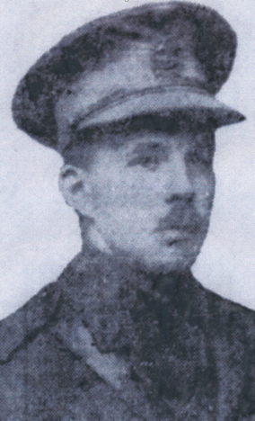

-1-MasterItem.svg)
Stories of Westminster United Church & its People / Page
63
It is evident during David Christie’s ministry that the congregation not only peaked in numbers of
membership but also in intensity of active participation. Our beginnings, our
formative years as a
congregation were complete. An outstanding Gothic style building, a statement of
our faith was a
cornerstone of a newly minted Wolsely community. Our worship services were
drawing people not
only from the surrounding area but from a wide rage of Winnipeg communities.
Our place, nationally, was evident in the leadership we had given in the
formation
of The United Church of Canada.
The Christies eventually retired to British Columbia. David died in Saanich in
February, 1943.
Fleming’s Letter
Fleming’s Letter arrived home several days after the family had been notified of his
death.
It was then published by the
Manitoba Free Press
on September 10, 1918:
The barrage bursting forth at ??? am along a 20 mile front, found our battalion
in reserve about a mile behind the line. About an hour afterwards, enough to
give
the attacking wave a good start, we followed on. About this time, as an immense
dam had given way under the strain, an immense tide of traffic started to flow
forward and covered the whole countryside as far as the eye could reach. The
whole
country swarmed with life. No roads could possibly contain the onflowing mass;
guns in their hundreds, cavalry in their thousands, and men innumerable, tanks
and transport simply swept over everything. The best sight of all was the
cavalry.
They inspired everyone with the thought that this was to be no mere trench
attack, but a real
breakthrough, as indeed it proved to be. Fritz kept up a desultory shell fire
only, but in the
tremendous onrush this did quite a lot of damage, and many were the halts while
the trails were
cleared of dead horses, broken limbers, etc. We were now nearing the original
front line, and the
sight of many Hun prisoners passing by let us know that our front line was
making the expected
progress. One burly Canadian passing by with a party of about 20 or so prisoners
calls out a few
words of encouragement to us “It’s easy, boys, nothing to it at all.” We are now well into Fritz
territory and ahead of the great rush of guns, road-makers, etc. who by this
time were all busily

Rev. DAvid christie